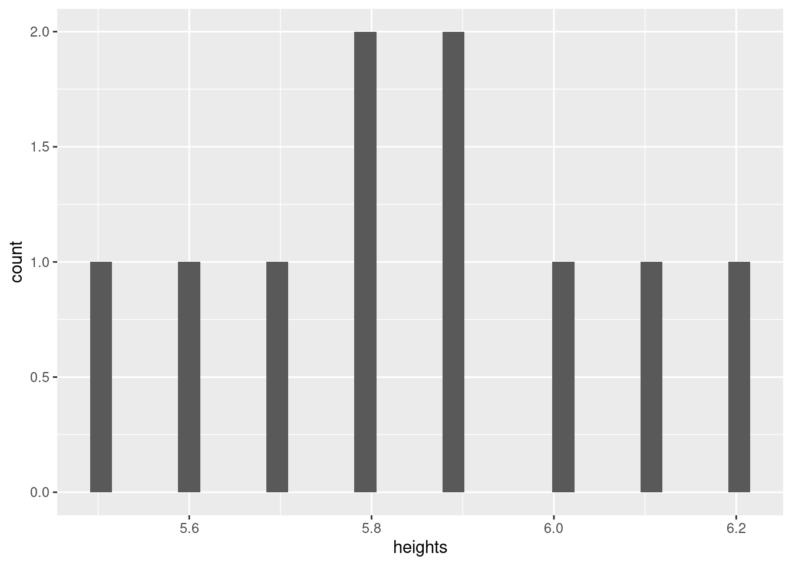

The journey to master statistics starts with a simple concept - uncertainty. We all know what it feels like to be uncertain. Some think of it as a gut feeling. Uncertainty Many books begin with the mundane details such as data types or programming language basics; we offer those details here. We also offer structure to better understand what statistics do for us. Statistics is a tool designed by humans to serve humans. If you are a human and vote either with your wallet and/or at the ballot box, you might find this book helpful. Voting is a decision that ought to be guided by your uncertainty. Putting numbers to your uncertainty is the aim of statistics. We will guide you through the process of quantifying these gut feelings.
Should I read this book?
We have no clue if you should read the book. Let’s take a quick self-quiz.
Are you a student?
Do you love learning?
Do you have a job that requires you to make decisions based upon data?
Do you vote?
Can you read English?
Do you have a computer you can run computer code (e.g., R, python, etc.)?
Do you have a desire to learn how to quantify your uncertainty?
If you answered yes to any of these questions, you might find this book useful. We hope you read on.
Not a graduate student? We do not care. Read the book. Arm yourself with knowledge of how uncertainty gets communicated. Statistics is a tool to do one thing - quantify our uncertainty. Approach the topic with that frame of reference and you will master statistics. How quickly? Depends upon your willingness to devote time to read and apply what you learn. We offer you a path towards understanding, quantifying and mastering your uncertainty. Good luck and welcome to the show.
What To Expect
You should expect:
Structure: A framework to understand and master statistics
Brevity: short, concise descriptions of key statistical concepts
Examples: real-world examples to illustrate the concepts
Code: statistical software code to demonstrate the concepts
Challenges: exercises to test your understanding of the concepts
How To Read This Book
Pace yourself. Expect familiarity after your first read, some facility after your second read, and moderate mastery after your third read. So, expect to read the book 3 times. Why? We know that repetition is key to mastery. Lather, rinse, repeat. If it is good enough for your hair, it surely is good enough for your brain.
A 30,000 ft View of Statistics
The structure begins here. We offer you a 30,000 ft view of statistics and guide you through an example, highlight some key concepts, define them, and then demonstrate their usefulness in the entire endeavor. Our framework allows you to revisit these key terms and concepts as you progress through the book.
Uncertainty
To begin, the structural core of statistics is uncertainty. We know not what we don’t know but we can quantify it with (false) precision. Quantifying uncertainty is the singular aim of all statistical methods. Methods include estimation, summary, prediction, and testing. Ultimately, people who use statistics either serve or serve as scientists. Our primary aim is to ensure that our scientists can use these tools effectively to quantify their own uncertainty. We share with you (the world) the same materials.
The Scientific Method (for reals)
We learn early on in school a falsehood of epic proportions. Science is not a lock-step path of hypothesis generation, stringent testing, and careful reporting. Quite the contrary! There are scoundrels amongst us. Some fabricate data. Some fabricate studies. Most of us do our best to conduct research consistent with our scientific mission - to describe, predict, and control the world around us. That sounds so sinister but those are the aims of science. Instead of the lock-step scientific method, we often come up with questions that are routinely rejected (\(p > 0.05\)) by data we scarcely know much about regarding the reliability or, gasp, the validity of our measures. That house of cards leads to many researchers hunting for new, potential findings worthy of further inquiry. Failed tests lead to fishing expeditions to find something worthy of publication. Why? We must publish to keep our jobs. So, we find stuff to publish. Failed initial tests? Don’t despair! You will find something to report in every dataset. Sir Ronald Fisher, interpreted the results of significant hypothesis tests worthy of further study - nothing more. He too opined that such tests were mere reason for optimism and not the ultimate arbiter of scientific relevance. Thus, all findings are findings worthy of further study. Sometimes, that further study stops with greater care and attention to the data; other times, we must conduct further empirical investigations to rule out alternative explanations. Here and further along in your journey, you will come back to this first paragraph and (hopefully) reflect on your own uncertainty.
EXAMPLE 1: Ice Cream Preference
Imagine a boring world where everyone liked chocolate ice cream. We would have no need for statistics or science for prediction; we have both perfect prediction and certainty. If just one person liked vanilla instead of chocolate, we would have uncertainty - not much uncertainty because it would still be prudent to guess that everyone liked chocolate ice cream. One error that occurs 1/N times can be quite trivial with a large sample. This seemingly trivial example brings all of the statistics you need to undestand in English. Now, we need to take these ideas from English and convert them into statistical language. Don’t worry, the language will become second nature and your understanding will deepen with each passing use. We introduced many concepts in this first example including:
Variables (and constants)
A variable is a characteristic that can take on different values. In this case, the variable is the ice cream flavor that a person would order. The variable can take on different values such as chocolate, vanilla, strawberry, mint chip, and rocky road. A constant is a value that does not change. In this case, the constant is the number of people who like chocolate ice cream. Thus, you now know that when we say variable, we mean some characteristic that we may want to better understand (or use to predict something that we want to understand - more on that later). When we say constant, we mean a value that does not change. Variables vary; constants do not.
Some Examples
Variables: height, weight, age
Constants: \(\pi\), \(e\), \(c\)
Some Demonstrations
# create a vector of heightsheights <-c(5.5, 6.0, 5.8, 5.9, 6.1, 5.7, 5.6, 5.9, 6.2, 5.8)# create a vector of weightsweights <-c(125, 189, 220, 175, 145, 147, 256, 127, 155, 184)# plot the heights using ggplotlibrary(ggplot2)ggplot(data.frame(heights), aes(x = heights)) +geom_histogram()
`stat_bin()` using `bins = 30`. Pick better value with `binwidth`.
VARIANCE!
Yes, we yelled it. If you learn nothing else from this resource, please master VARIANCE. As we alluded to above, the characteristics that we measure differ between people (e.g., height) and within a person (e.g., weight). To our example, we can imagine ice cream preference differing between people (i.e., some people prefer vanilla to chocolate) and within each (i.e., our tastes change as we age). The differences between or changes within are variance. You will learn that there are formal definitions, graphical depictions, and qualifiers to variance. For now, remember that variance is a measure of how much difference exists in your variables. More differences are preferable to fewer differences. Why? Differences are what we study. We study differences to understand the world around us. We study differences to predict the future. We study differences to control the world around us. Variance is the measure of differences and, as a result, variance is the measure of uncertainty. We shall return to this concept often.
Prediction
We aim to predict in science.
Error (difference between observed and predicted value)
foo
Probability (likelihood of a particular event occurring)
bar
Frequency (number of times an event occurs)
baz
Frequency (number of times an event occurs)
baz
Distribution (pattern of frequencies of events)
baz
Sample (subset of a population)
baz
Sample size (number of observations in a sample)
baz
Concepts such as variables (and constants), prediction, and sample size. We also introduced the concept of error. Error is the difference between the observed (aka true) value and the predicted value. In this case, the true value is the ice cream flavor the person would order. The predicted value is the most likely flavor the person would order. The error is the difference between the true value and the predicted value. In this case, the error is the difference between the flavor the person would order and the flavor we predicted the person would order.
# Start with a small, manageable sample sizeN <-100# create a vector of ice cream flavorsflavors <-c("chocolate", "vanilla", "strawberry", "mint chip", "rocky road")# create a data frame of ice cream preferencesic_prefs <-data.frame(id=1:N, flavor =factor(rep("chocolate", N), levels = flavors))# create a boxplot of the chocolate sample using ice cream cones with the color of the flavor as the filllibrary(ggplot2)ggplot(ic_prefs, aes(x = flavor)) +geom_bar(fill ="chocolate") +theme_minimal()

# create a sample of 1000 people who like chocolate ice cream 90% of the timesample <-sample(flavors, 1000, replace =TRUE, prob =c(0.95, 0.01, 0.01, 0.01, 0.01))# create a table of the sampletable(sample)
# create a sample of 1000 people who like chocolate ice cream 50% of the timesample <-sample(flavors, 1000, replace =TRUE, prob =c(0.5, 0.1, 0.1, 0.1, 0.2))# create a table of the sampletable(sample)
Who might be such a person to go against the social norms?
one of the early contributors to frequentists statistics, once said, “To consult the statistician after an experiment is finished is often merely to ask him to conduct a post mortem examination. He can perhaps say what the experiment died of.” Such a post mortem were apropos.
Each require some must start with the first general principle - uncertainty or rather quantifying uncertainty. To fully grasp the concept of uncertainty, we offer you a simple exercise. Suppose you were to guess the weight of any adult family member. Your best guess would likely be off. Empirical evidence, however, suggests that the best guess is the arithmetic mean. Why?
[1] 172.3
Min. 1st Qu. Median Mean 3rd Qu. Max.
125.0 145.5 165.0 172.3 187.8 256.0